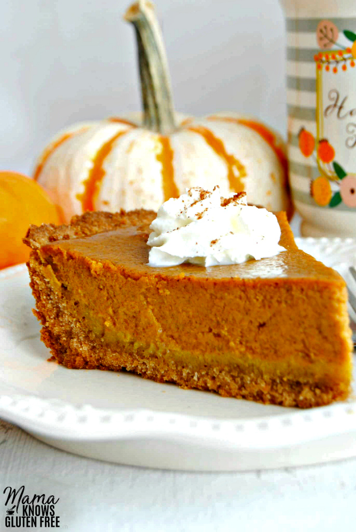

Easy Gluten-Free Pumpkin Pie {Dairy-Free Option}
Ingredients
Crust:
- 2 cups crushed gluten-free Cinnamon Chex cereal , or your favorite flavor of gluten-free Chex
- 1 cup gluten-free Bisquick If you don’t have gluten-free Bisquick , see the recipe notes to make your own.
- ½ cup unsalted butter dairy-free use Smart Balance butter
- 3 tablespoons ice water
- gluten-free cooking spray I like coconut spray
Pumpkin Filling:
- 1 15 oz. can pumpkin not pumpkin pie filling
- 2 large eggs
- 1 12 oz. can evaporated milk dairy-free use 1 cup of full-fat canned coconut milk
- ¾ cup sugar
- 1 tablespoon pumpkin pie spice
- 1 teaspoon ground cinnamon
- 1 teaspoon pure vanilla extract
Directions
- Preheat the oven to 425o F.
Crust
- Crush the gluten-free cinnamon Chex cereal in a food processor until you have 2 cups.
- Add gluten-free Bisquick and chopped butter (dairy-free use Smart Balance butter) in the food processor.
Process until the consistency of thick sand.
- Pour the Chex mixture into a bowl. Add the ice water and mix with your hands until a compact dough has
formed. Refrigerate while making the pie filling.
Pumpkin Filling
- In a large bowl beat eggs and sugar together.
- Add cinnamon, pumpkin pie spice and vanilla and mix until fully combined.
- Add pumpkin and mix until fully combined.
- Stir in evaporated milk and mix until fully combined. Dairy-free use 1 cup of canned coconut milk (full
fat).
- Spay 9-inch pie dish with gluten-free cooking spray.
- Press the dough into the pie dish.
- Using the middle rack, bake for 5 minutes at 425° F.
- Remove from oven and pour pumpkin pie filling into the pie crust. Depending on how deep your pie pan is, you
may have a little of the filling left over. I always pour it into a custard cup and bake it.
- Using the middle rack bake for 15 minutes at 425° F and then lower the heat to 350° F and bake for an
additional 40 to 50 minutes. Please watch your pie and if the crust is getting too brown for your liking
cover crust edges with foil.
- Allow to cool before serving. I like to allow the pie to cool for at least 1 hour before I refrigerate the
pie. It's best served cold.
- Serve warm or cold with whipped cream. Enjoy!
- Once cooled cover and refrigerate.
View the original recipe online
Contact Me
Send me an email!
University of Montana
32 Campus Drive
Missoula, MT 59812